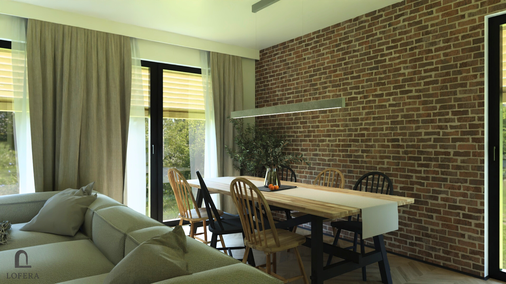
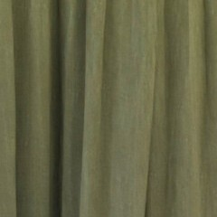
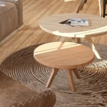
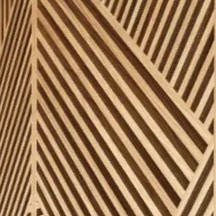

Wizualizacje 3D
Dom z cegłą i szałwią
 Ujęcie 1 z 6
Ujęcie 1 z 6Kliknij miniaturę, żeby obejrzeć wnętrze z innej strony. Tak wygląda każdy projekt, zanim ruszy remont.


Pracownia architektury wnętrz · województwo łódzkie
Jestem Amanda. Projektuję wnętrza domów i mieszkań i każde pokazuję na wizualizacjach 3D, zanim kupisz pierwszą płytkę.
Wejdź do środka
Wnętrze ma być wygodne na co dzień, a nie tylko ładne na zdjęciu. Dlatego zanim cokolwiek zamówisz, przejdziemy się po nim razem, na ekranie.
Lofera to moja pracownia. Projektuję domy i mieszkania w województwie łódzkim, od małych metraży po wysokie salony z antresolą.
Najwięcej satysfakcji dają mi wnętrza, które na pierwszy rzut oka wydają się kłopotliwe: za wysokie, za małe, z dziwnym układem.
Ujęcie 1 z 6Kliknij miniaturę, żeby obejrzeć wnętrze z innej strony. Tak wygląda każdy projekt, zanim ruszy remont.
 Ujęcie 1 z 2
Ujęcie 1 z 2Kliknij miniaturę, żeby obejrzeć wnętrze z innej strony. Tak wygląda każdy projekt, zanim ruszy remont.
W moich projektach wracają te same, naturalne materiały: cegła, drewno, len i stonowane zielenie. Próbki obok to wycinki z wizualizacji, nie zdjęcia z katalogu.





Każdy projekt zaczyna się od rozmowy. Dopiero potem powstaje układ, wizualizacje i dobór materiałów.
Oferta i współpraca


Strefa dzienna, kuchnia, schody i sypialnie: układ, kolory, materiały i oświetlenie dla całego domu albo jego części.
Także małe metraże. Każdy kąt dostaje swoje zadanie, a wnętrze jest funkcjonalne i nie przytłacza.
Wysoki sufit i antresola wymagają innej skali mebli i lamp. Układam je tak, żeby było i ładnie, i przytulnie.
Zabudowa, wyspa, stół i światło nad blatem zaplanowane pod to, jak na co dzień gotujesz i jesz.
Kominek, telewizor, regały i wygodna sofa zebrane w jedną spokojną całość.
Realistyczne widoki wnętrza z kilku ujęć. Poprawki robimy na ekranie, a nie w trakcie remontu.
Każdy etap widzisz na ekranie, zanim ruszy remont.
Opowiadasz, jak mieszkasz i co chcesz zmienić. Pytam o szczegóły: kto korzysta z wnętrza, co trzeba schować, gdzie ma być jasno, a gdzie przytulnie.
Rozplanowuję wnętrze i pokazuję je z kilku ujęć. Poprawki robimy na ekranie, nie w trakcie remontu.
Zestawiam kolory, okładziny, lampy i meble w jedną spójną całość, z którą możesz iść do wykonawcy.
„Mogę polecić z czystym sumieniem! Odpowiednia osoba na odpowiednim miejscu. Potrafi słuchać potrzeb klienta i idealnie wpasowuje się w jego gust. Dzięki ogromnej wyobraźni potrafi zwizualizować najbardziej zwariowany pomysł!”
„Skorzystałem z usług podczas remontu mieszkania z wysokim sufitem (5m) i antresolą. Wydawało mi się, że nie da się tego zrobić ładnie, ale jednak się dało i ładnie, i funkcjonalnie. Dziękuję za pomoc!”